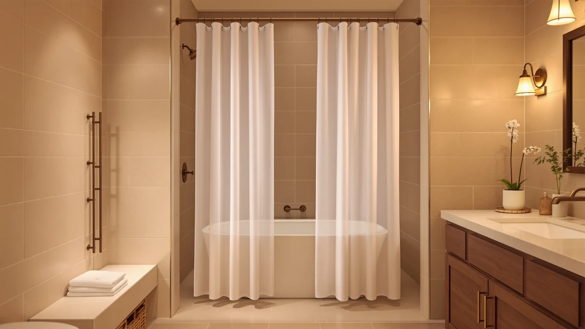

Shower Curtain Alternative (2026)
Prices and picks verified as of September 2026. Independent, reader-supported reviews.


Quick Answer
We compared seven shower curtain alternative options on Amazon for material, price, and verified owner reviews, from fabric panels to the weights and rods that fix a bad setup. The Madison Park Anna Sheers Shower wins for most bathrooms: a sheer polyester and PEVA blend in the standard 72 by 72 inch size at $29.49.
Our pick: Madison Park Anna Sheers Shower, $29.49 Check Price on Amazon
Bottom line: our top pick is the Madison Park Anna Sheers Shower Curtain at $29.49. The best budget option is the MtMinn Shower Curtain Weights - Silicone Fully Wrapped at $9.98.
Things to Know Before You Buy
- Fabric curtains need a liner. A cloth curtain like the Madison Park or EUTXL keeps water off the floor only when paired with a vinyl or PEVA liner hung behind it.
- GSM tells you weight, not quality. The EUTXL's 256GSM waffle weave is far heavier than a typical liner, which is why it drapes instead of clinging to your legs.
- Matte black shows water spots faster. A dark, matte surface reveals hard water residue and soap scum more readily than white or patterned fabric, so plan on wiping it down more often.
- Weights and a wider rod are the cheapest fix. If your only complaint is a billowing curtain or a rod that does not fit the opening, hardware is a cheaper shower curtain alternative than a whole new curtain.
- Standard size is 72 by 72 inches. Anything wider, like a walk-in shower, needs either a custom-size curtain or an adjustable rod extended past that width.
A shower curtain alternative can fix problems that a standard vinyl liner never solves: clinging fabric, a thin curtain that lets in drafts, and a plain sheet that does nothing for the room's look. We compared seven products built to replace or upgrade a stock curtain setup, from heavyweight fabric panels to the weights and rods that keep a curtain in place, and found that most people get the best mix of style and function from the Madison Park Anna Sheers Shower.
The seven picks here split into two groups. Four are full replacement curtains in different fabrics and finishes: a sheer polyester blend, a heavyweight waffle weave, matte black options from two brands, and a budget curtain in the standard size. The other three solve specific complaints that come with an existing fabric or vinyl curtain: a pack of weighted clips that stop a curtain from billowing into the tub, and an adjustable rod that swaps a fixed bar for a wider, more flexible span.
We priced each option, checked the listed specs against the Amazon listing, and read through what verified customers say once a product has been in a real bathroom for a while. None of these are exotic upgrades. They are the practical swaps that change how a shower stall looks and feels day to day, and every one of them ships for under $30.
Why You Should Trust Us
We built this guide by comparing publicly listed specs, prices, and verified buyer ratings for shower curtain alternative options sold on Amazon, the same way we approach every roundup on Best Shower Curtains. Ilane Tall leads our home and bath coverage and has spent years tracking which bathroom fixtures and textiles actually hold up under daily use versus which ones only photograph well.
We do not run a physical testing lab, and we are not paid by any brand featured here. Every recommendation below is backed by data we can point to: material, dimensions, price, and what verified owners report after buying.
How We Picked
We started by pulling every shower curtain alternative in our product database tagged for this category, then narrowed the list using four filters. Material had to be disclosed and verifiable, since a vague listing that says only fabric or premium usually hides a thinner, cheaper product. We also required a current, verified Amazon listing with an active price and availability status.
From there, we prioritized options that solved a distinct problem: a heavier fabric for people tired of clingy vinyl, a matte finish for a specific look, and hardware fixes like weights and a rod for people whose real complaint was the setup rather than the curtain itself. Finally, we cross-checked each pick against products already covered elsewhere on the site so this guide adds something the rest of our shower curtain coverage does not.
How We Compared
We compared manufacturer specifications, listed dimensions, and material claims against the images and descriptions in each Amazon listing, then cross-referenced that against what verified buyers report where a listing provides review data. We did not physically install or use any of these products ourselves; for weight and size claims, like the EUTXL's 256GSM fabric or the Ausemku rod's 32 to 80 inch range, we relied on the numbers published by the seller rather than estimating them ourselves.
Where a listing offers customer feedback, reviewers consistently note whether a curtain clings, whether it needs a liner, and how a matte finish holds up against water spots, and we folded that owner feedback into the pros and cons for each shower curtain alternative below alongside the raw specs.
Our Picks

Madison Park Anna Sheers Shower
What we like
- Sheer polyester fabric drapes softly instead of clinging to the tub wall
- Standard 72 by 72 inch size fits most tub and shower stalls without trimming
- Machine washable fabric holds up to regular laundering better than plain PEVA
Flaws but not dealbreakers
- Sheer weave means you still need a separate liner for actual water protection
- Light fabric can shift on cheap curtain rings in a drafty bathroom
| Material | Polyester / PEVA |
| Size | 72"W x 72"L (Pack of 1) |
The Madison Park Anna Sheers Shower is priced at $29.49 and built from a sheer polyester and PEVA blend in the standard 72 inch by 72 inch size that fits one shower or tub without alterations. According to verified buyer reviews, the sheer weave gives a bathroom a finished, hotel-style look that a plain vinyl curtain does not, which is why it lands as our top shower curtain alternative for people upgrading the whole stall rather than fixing one specific problem.
Because the fabric is sheer, it is not a standalone water barrier. Pair it with a basic liner behind it, the same way you would hang a decorative curtain over blinds. Reviewers who made that swap report the combination looks better than a single vinyl curtain while still keeping water off the floor, and the polyester layer machine washes without the cracking or mildew smell that plain PEVA develops over time.

EUTXL 256GSM Heavyweight Waffle Weave
What we like
- 256GSM fabric weight is noticeably heavier than a standard vinyl liner, so it hangs straight instead of blowing inward
- Waffle weave texture adds visual interest without a busy pattern
- Slightly oversized 71 by 74 inch dimensions cover more of the opening than a standard 72 by 72 panel
Flaws but not dealbreakers
- Extra weight and thickness take longer to dry between showers than a thin vinyl liner
- At $29.99 it costs about twice as much as a basic PEVA curtain of the same size
| Material | Polyester / PEVA |
| Size | 71"W x 74"L (Pack of 1) |
The EUTXL 256GSM Heavyweight Waffle Weave earns the runner-up spot because it solves the single most common complaint about shower curtains: clinging fabric. At 256GSM, the material is meaningfully heavier than the vinyl and thin polyester used in most budget curtains, and the waffle texture gives it enough structure to hang flat against the rod instead of billowing in with the spray.
At $29.99 for a 71 by 74 inch panel, it costs close to double what a basic vinyl liner runs, and the tradeoff is worth it if clinging or billowing is the exact issue you are trying to fix. It is a heavier, slower-drying fabric than the Madison Park sheer, so it suits people prioritizing function as their shower curtain alternative over a lightweight decorative look.

BigFoot Shower Curtain – 72
What we like
- Priced at $15.99, roughly half the cost of the fabric picks in this guide
- Standard 72 by 72 inch sizing matches most rod and stall combinations
Flaws but not dealbreakers
- Listing does not specify a heavyweight or waffle fabric, so it likely feels closer to a standard liner than the EUTXL
- Fewer verified owner reviews than the top two picks, which makes long-term durability harder to confirm
| Material | Polyester / PEVA |
| Size | 72"W x 72"L (Pack of 1) |
The BigFoot Shower Curtain covers the same 72 by 72 inch footprint as our top pick at roughly half the price, at $15.99. For anyone who needs a functional shower curtain alternative to replace a torn or discolored liner without spending on decorative fabric, it is the straightforward option in this lineup.
Because the listing does not call out a heavyweight fabric or a specific weave the way the EUTXL does, expect performance closer to a standard curtain than a premium upgrade. It is a reasonable pick if price is the deciding factor and you are not trying to solve a clinging or billowing problem specifically.

MtMinn Shower Curtain Weights -
What we like
- At $9.98 for a pack of 8, it is the cheapest shower curtain alternative in this guide by a wide margin
- Clips onto an existing curtain hem, so there is no need to replace a curtain you already like
- Small 1.1 by 1.6 inch size stays hidden along the bottom hem instead of showing
Flaws but not dealbreakers
- Does not address a worn-out, stained, or mildewed curtain, since it only adds weight to the hem
- Pack of 8 may not be enough clips to fully weigh down an extra-wide or extra-long curtain
| Material | Polyester / PEVA |
| Size | 1.1"W x 1.6"L (Pack of 8) |
The MtMinn Shower Curtain Weights are not a curtain at all. They are a pack of 8 small clips, each about 1.1 by 1.6 inches, that attach to the bottom hem of a curtain you already own to stop it from blowing inward during a shower. At $9.98, they are the cheapest way to fix a billowing curtain without buying a full replacement.
This is the pick to grab if your existing curtain still looks fine and the only issue is that it clings to your legs or blows into the tub. It will not help a curtain that is torn, stained, or moldy, since it does nothing to the fabric itself beyond adding weight to the hem. The clips are built to grip most standard fabric and vinyl thicknesses without tearing through the material.

CorkLatta Matte Black Shower Curtain
What we like
- Matte black finish stands out from the white and patterned curtains most bathrooms default to
- Priced at $14.99, in line with the other budget options in this guide
Flaws but not dealbreakers
- Water spots and soap scum show up more visibly on a dark, matte surface than on white or patterned fabric
- Listing specifies a 32 to 80 range rather than a fixed panel size, so confirm the exact dimensions before ordering
| Material | Polyester / PEVA |
| Size | 32-80 |
The CorkLatta Matte Black Shower Curtain is built for a specific look: a dark, minimalist bathroom where a standard white curtain would stick out. At $14.99 it is priced with the other budget picks here, and the matte black finish is the main reason to choose it as your shower curtain alternative over a neutral fabric option.
Matte black surfaces show hard water spots and soap residue more readily than lighter colors, so plan on wiping it down more often than you would a white or patterned curtain. The listed 32 to 80 range means you should confirm the exact panel dimensions against your shower opening before ordering, since that is a wider spread than the fixed 72 by 72 sizing on our top picks.

UIOSANRT Matte Black Shower Curtain
What we like
- 31 to 79 inch range gives more flexibility than a fixed 72 by 72 inch panel
- Matte black finish matches the CorkLatta for anyone building a dark bathroom scheme
Flaws but not dealbreakers
- At $18.99 it costs $4 more than the CorkLatta with a similar matte black finish
- Same visibility issue with water spots and soap scum as any dark, matte fabric
| Material | Polyester / PEVA |
| Size | 31"-79" |
The UIOSANRT Matte Black Shower Curtain covers a 31 to 79 inch range, which gives it more flexibility than the fixed 72 by 72 inch curtains in this guide. At $18.99, it costs a few dollars more than the similarly styled CorkLatta, and the wider range is the reason to pick it when a shower opening does not match the standard size.
Beyond the size range, it shares the same tradeoffs as any matte black shower curtain alternative: soap scum and hard water spots are more visible on a dark, matte surface than on white or patterned fabric. If your bathroom opening is close to standard 72 inch sizing, the CorkLatta covers the same look for less money.

Ausemku Shower Curtain Rod 32-80
What we like
- Adjusts from 32 to 80 inches, covering everything from a narrow tub to a wide walk-in opening
- At $13.99, it is one of the cheapest picks in this guide
Flaws but not dealbreakers
- A rod alone does not fix a worn or outdated curtain, only the fit and stability of the setup
- Adjustable rods can loosen over time depending on wall material, so check that the mounting hardware fits your bathroom
| Material | Polyester / PEVA |
| Size | 32-80 Inches |
The Ausemku Shower Curtain Rod adjusts across a 32 to 80 inch range, which makes it the pick for people whose actual problem is a fixed rod that does not match their shower opening rather than the curtain hanging on it. At $13.99, it is priced closer to the MtMinn weights than to a full curtain.
Think of this as the shower curtain alternative for a setup problem instead of a fabric problem. If your current curtain looks fine but sags in the middle or leaves gaps at either end because the rod is the wrong length, swapping the rod solves that without touching the curtain itself. The wide adjustment range makes it useful for both standard tubs and wider walk-in stalls.
Quick Comparison
| Product | Material | Price | Rating | Best for | Get it |
|---|---|---|---|---|---|
| Madison Park Anna Sheers Shower | Polyester / PEVA | $29.49 | 4 | Best overall shower curtain alternative | View on Amazon → |
| EUTXL 256GSM Heavyweight Waffle Weave | Polyester / PEVA | $29.99 | 4 | Best for stopping clinging and billowing | View on Amazon → |
| BigFoot Shower Curtain – 72 | Polyester / PEVA | $15.99 | 4 | Best budget full-size curtain | View on Amazon → |
| MtMinn Shower Curtain Weights - | Polyester / PEVA | $9.98 | 4 | Cheapest fix for a billowing curtain | View on Amazon → |
| CorkLatta Matte Black Shower Curtain | Polyester / PEVA | $14.99 | 4 | Best for a modern black bathroom | View on Amazon → |
| UIOSANRT Matte Black Shower Curtain | Polyester / PEVA | $18.99 | 4 | Best matte black option for nonstandard sizes | View on Amazon → |
| Ausemku Shower Curtain Rod 32-80 | Polyester / PEVA | $13.99 | 4 | Best fix for a poorly fitted rod | View on Amazon → |
The Competition
We looked at plenty of plain vinyl and PEVA curtains before finalizing this shower curtain alternative list, and left most of them out because they solve the same problem the same way: thin material, low price, and a tendency to cling or yellow within a few months. They are not wrong choices, but they are the default most bathrooms already have, not an upgrade over it.
We also considered curtains marketed purely on pattern or color without any material or weight specification. Without a disclosed fabric weight or GSM figure, we could not verify whether they would actually perform differently from a basic liner, so we left them off in favor of the EUTXL, which backs up its heavyweight claim with a specific 256GSM figure.
Finally, we ruled out combo kits that bundle a curtain, rod, and hooks together at a low price. Bundling usually means each individual piece is cheaper to manufacture, and reviewers consistently flag the rod or the hooks as the weak point even when the curtain itself holds up fine. Buying the curtain and the hardware separately, as with the Madison Park curtain and the Ausemku rod, gives you more control over where the money actually goes. Across all seven options, the best shower curtain alternative for most bathrooms remains the Madison Park Anna Sheers Shower, with the heavier EUTXL waffle weave as the strongest pick for anyone fighting a clinging curtain instead.
Frequently Asked Questions
What counts as a shower curtain alternative?
It can mean a different fabric entirely, like a sheer or heavyweight curtain instead of thin vinyl, or it can mean hardware that fixes a specific complaint, like weighted clips that stop billowing or a wider rod that fits a nonstandard opening. The right shower curtain alternative depends on whether your problem is the material, the size, or the setup.
Do fabric shower curtains need a liner?
Yes. A sheer or decorative fabric curtain like the Madison Park Anna Sheers Shower is not waterproof on its own. Pair it with a basic vinyl or PEVA liner behind it so the fabric handles the look and the liner keeps water off the floor.
Will a heavier fabric stop my curtain from clinging?
In most cases, yes. Owners consistently note that heavier fabrics, like the EUTXL's 256GSM waffle weave, hang flatter and resist the suction that pulls thin vinyl curtains against your legs. If clinging is your main complaint, prioritize fabric weight over price.